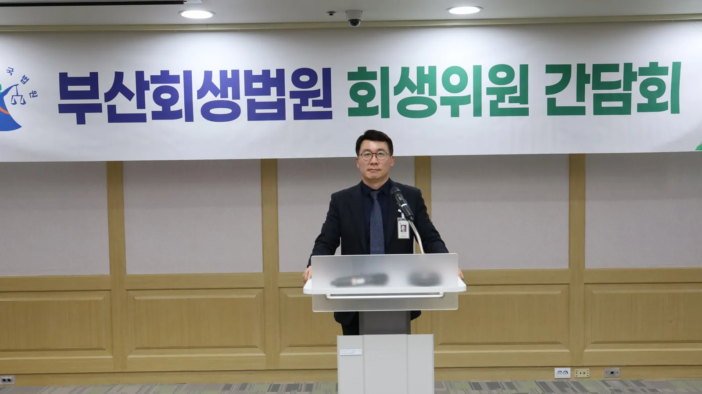
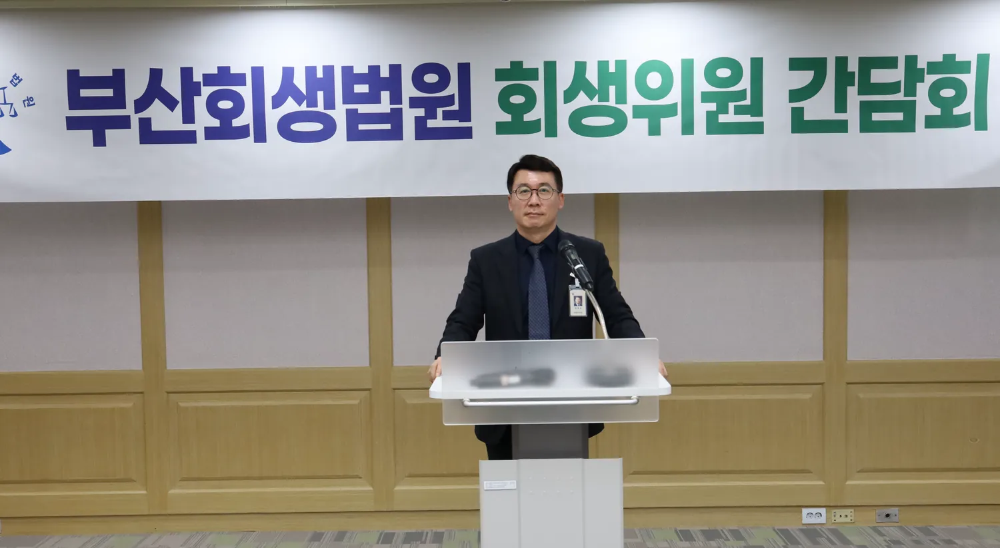

회생법원에서 심사하던 회생위원이,이제 여러분의 새로운 시작을
함께합니다
정욱상

다시 시작하는 길,센텀 법무사 사무소가
함께합니다.
센텀 법무사 사무소는 회생법원 출신 법무사가 상담부터 면책까지 직접 책임지고 함께 하겠습니다.
부산회생법원 3년 근무 · 회생위원 역임2024년 1월 ~ 2026년 12월
센텀 법무사 사무소는 개인회생만 전문으로 합니다. 채무 현황 정리부터 변제계획안 작성, 법원의 인가 결정까지 대표 법무사가 직접 챙깁니다.

Court Experience
회생법원 회생위원
회생법원 회생위원
출신이 직접 맡습니다.
회생위원은 회생법원에서 개인회생을 심사하는 사람입니다. 정욱상 법무사는 회생법원에서 수많은 개인회생 사건을 직접 심사했던 경험이 있습니다. 회생법원의 회생위원이 무엇을 확인하고 심사하는지 가장 정확하게 아는 법무사입니다.
- 01
심사하던 눈으로 서류를 봅니다
채권자 목록, 재산 목록, 수입·지출 목록을 법원이 살펴보는 순서대로 다시 확인합니다.
- 02
보정을 미리 대비합니다
법원이 추가로 요구할 만한 자료를 접수 전에 챙겨 보정 권고에 대비합니다.
- 03
상담부터 끝까지 직접 담당합니다
상담, 변제계획안 작성, 법원 대응까지 회생위원 출신 법무사가 직접 챙깁니다.
About
개인회생은
개인회생은
서류로 결정됩니다.
법원은 채권자 목록, 재산 목록, 수입·지출 목록, 변제계획안을 보고 판단합니다. 빠뜨린 채권자 한 곳, 잘못 적은 금액 하나가 보정과 기각으로 이어질 수 있습니다. 저희는 서둘러 접수하기보다 틀리지 않게 준비하고, 그 과정을 의뢰인이 언제든 확인할 수 있도록 공유합니다.
법무사가 직접 확인합니다
법원에 내는 모든 서류는 접수 전에 대표 법무사가 검토합니다. 사무원에게만 맡기지 않습니다.
진행 과정을 알려 드립니다
서류 확인, 검토, 확정, 완료. 지금 어느 단계인지 단계가 바뀔 때마다 안내합니다.
비용을 먼저 말씀드립니다
법무사 보수와 법원에 내는 비용(인지대, 송달료 등)을 나누어 착수 전에 안내합니다.
Personal Rehabilitation
개인회생, 이렇게 돕습니다
개인회생은 일정한 소득이 있는 채무자가 법원이 인가한 계획대로 빚의 일부를 갚으면 나머지를 면책받는 제도입니다. 신청 전 검토부터 면책까지 전 과정을 맡습니다.
- Eligibility
신청 자격 검토
소득, 재산, 채무 규모를 살펴 개인회생을 신청할 수 있는지부터 확인합니다. 맞지 않으면 그렇다고 말씀드립니다.
- Repayment Plan
변제계획안 작성
소득에서 생계비를 뺀 금액을 기준으로, 원칙 3년(최장 5년) 동안 갚을 계획을 세웁니다.
- Creditors
채권자 목록 작성
금융기관, 대부업체, 개인 채권자의 부채증명서를 모아 빠진 곳 없이 채권자 목록을 만듭니다.
- Stay Orders
금지명령·중지명령
신청과 함께 금지명령을 신청해 독촉 전화, 급여 압류 같은 추심과 강제집행을 멈추도록 합니다.
- Court Process
보정 대응·채권자 집회
법원의 보정 권고에 기한 내 답하고, 회생위원 면담과 채권자 집회를 함께 준비합니다.
- Discharge
인가 후 관리·면책
인가 결정 뒤 사정이 바뀌면 변제계획 변경을 돕고, 변제를 마치면 면책 신청까지 마무리합니다.
신청 요건과 변제 기간은 개인 사정에 따라 달라집니다. 정확한 내용은 상담에서 확인해 드립니다.
Process
상담부터 인가 결정까지
모든 사건은 같은 순서로 진행됩니다. 사무소 내부에서도 이 단계 그대로 진행 상황을 관리합니다.
상담
채무, 소득, 재산 현황을 듣고 신청 가능 여부와 예상 변제금을 안내합니다.
의뢰인이 할 일채무와 소득 상황을 편하게 말씀해 주세요.
서류 확인
부채증명서, 소득·재산 자료 목록을 드리고 받은 서류의 누락을 확인합니다.
의뢰인이 할 일안내받은 서류를 발급해 보내 주세요.
서류 검토
법무사가 신청서, 채권자 목록, 변제계획안을 서로 대조해 검토합니다.
의뢰인이 할 일기다리시면 됩니다. 확인할 점이 생기면 연락드립니다.
확정
최종본을 의뢰인과 함께 확인한 뒤 법원에 접수하고 금지명령을 신청합니다.
의뢰인이 할 일최종본을 읽어 보시고 확인해 주세요.
완료
보정에 대응해 개시 결정과 인가 결정을 받고 사건을 마무리합니다.
의뢰인이 할 일결과 서류를 받아 보관하세요.
정대표 법무사 사진 자리
Representative
대표 법무사정욱상
“의뢰인이 서류를 맡기고 돌아서는 순간부터, 그 일은 제 일이 됩니다.”
빚 문제로 찾아오시는 분들은 대부분 오랫동안 혼자 고민하다 오십니다. 개인회생은 부끄러운 일이 아니라 법이 마련해 둔 다시 시작하는 절차입니다. 낯선 용어와 서류 때문에 불안해하지 않으시도록, 무엇이 필요하고 얼마나 걸리는지 쉬운 말로 설명드리겠습니다. 센텀 법무사 사무소의 모든 사건은 제가 직접 검토합니다.
약력 예시 · 실제 내용으로 교체
- ○○대학교 법학과 졸업
- 제○○회 법무사 시험 합격
- 부산지방법무사회 소속
- 개인회생·파산 사건 전담
- (현) 센텀 법무사 사무소 대표 법무사
Blog & FAQ
블로그 · 자주 묻는 질문
개인회생을 준비하는 분들이 궁금해하는 내용을 글과 문답으로 정리했습니다.
블로그 글을 불러오는 중입니다…
자주 묻는 질문을 불러오는 중입니다…
사정마다 답이 달라질 수 있습니다. 정확한 내용은 상담에서 확인해 드립니다.
Gallery
사진
사진에 마우스를 올리거나 누르면 크게 보고 설명을 읽을 수 있습니다.
Consultation
상담 신청
채무 상황을 간단히 남겨 주시면 영업일 기준 하루 안에 담당자가 연락드립니다. 상담 내용은 외부에 알려지지 않습니다.
이미 사건을 맡기신 분은 진행 상황 조회에서 이름과 접수번호로 확인하실 수 있습니다.
- 이메일
- contact@centum-law.example
- 주소
- 부산광역시 해운대구 우동 1470 에이스하이테크21 제1712-3호
- 상담 시간
- 평일 09:00 – 18:00 (점심 12:00 – 13:00)
전화번호와 이메일은 예시입니다.
Location
에이스하이테크21 17층부산 해운대구 우동 1470 · 제1712-3호센텀시티역 인근
네이버 지도 열기 ↗
오시는 길
부산광역시 해운대구 우동 1470 에이스하이테크21 제1712-3호
- 상담 시간
- 평일 09:00 – 18:00 (점심 12:00 – 13:00)
- 지하철
- 부산 2호선 센텀시티역 인근